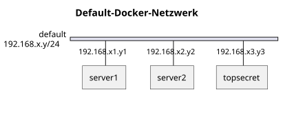
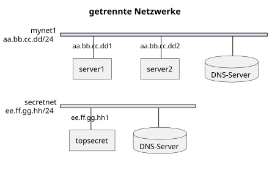

{% extends "../_base_template.html" %}
{% block title %}Lektion 5 - Container Networks{% endblock %}

{% block sections %}
<section data-markdown>
<textarea data-template>
# <i class="fas fa-graduation-cap"></i> M347 - Container-Networks

## Heutiges Ziel

- Sie wissen, was "Container Networks" sind
- Sie kennen den Zweck von Container Networks und wissen, wann Sie diese einsetzen
- Sie können eigene Container Networks erstellen und Container damit verbinden

</textarea>
</section>

<section data-markdown>
<textarea data-template>
# <i class="fas fa-flask"></i> Experiment: Kommunikation von Containern

**Aufgabe:**

Erstellen Sie 3 Container mit folgenden Kommandos: Dies erstellt 3 Container mit den Host-Namen `server1`, `server2` und `server3`.<br>
Dies startet 3 Netcat-Echo-Server, welche alle auf TCP Port 9999 "lauschen", und bei Verbindung den Text zurückgeben:

```sh
# jeweils in einem neuen (Powershell-)Terminal, da diese offen bleiben:
PS1> docker run --rm --name=server1 jonlabelle/network-tools nc -lk 9999
PS1> docker run --rm --name=server2 jonlabelle/network-tools nc -lk 9999
PS1> docker run --rm --name=topsecret jonlabelle/network-tools nc -lk 9999
```

Sie können nun einen 4., interaktiven Container starten, und mit `netcat nc`, wie schon in der vergangenen Lektion, die einzelnen Echo-Server 
verbinden und einen Text hinschicken:

```sh
# in der Powershell:
PS1> docker run -ti --rm jonlabelle/network-tools

# dann im Docker-Container:
docker> nc w.x.z.y 9999 # <<----- Hmmmm.... wie lautet die IP...?

docker> nc server1 9999 # <<----- Blöd.... der Name des Containers geht auch nicht... Keine DNS-Auflösung!
```
Da haben wir schon ein Problem: Wir kennen die IP-Adresse der Server nicht... <i class="far fa-hand-point-right"></i> **Wie finden Sie diese raus?**<br>

Und einer der Server heisst `topsecret`..... Ob es wohl eine gute Idee ist, wenn wir den erreichen?

_(auf der nächsten Folie gehts weiter...)_

</textarea>
</section>

<section data-markdown>
<textarea data-template>
# <i class="fas fa-flask"></i> Experiment: Kommunikation von Containern

Unser Experiment geht weiter:

1. **Wie finden wir die IP-Adresse der Server-Container?**

<div class="fragment">

Wir können die Container inspizieren (von aussen): Dazu verwenden wir `docker inspect`, um Details über den Container zu erfahren:

```sh
# in der PowerShell:
PS1> docker inspect server1 | Select-String "IPAddress"

# in einer Unix-Shell:
sh> docker inspect server1 | grep "IPAddress"

# Output:
"IPAddress": "192.168.215.3"  # <<--- Oder ähnlich
```

2. OK! Nun können wir den Echo-Server kontaktieren:

```sh
docker> nc 192.168.215.3 9999
Hello, World!

# Im Terminal von server1 sollte nun "Hello, World!" erscheinen.
```

3. **Geht das nun auch mit dem `topsecret`-Server?**
</div>

<div class="fragment">

<i class="far fa-hand-point-right"></i> Ja! Wir können auch den `topsecret`-Server erreichen! Das sollte aber nicht sein (schliesslich ist der Top Secret!).

Wir haben also 2 Probleme (welche?):
</div>

<div class="fragment">

1. Das Auffinden von Diensten ist mühsam: wir müssen immer die IP-Adresse rausfinden, es gibt keine DNS-Auflösung.
2. Dienste sind von allen anderen Diensten erreichbar - auch wenn sie aus Sicherheitsgründen voneinander abgegrenzt werden sollten. 
</div>

</textarea>
</section>

<section data-markdown>
<textarea data-template>
# <i class="fas fa-graduation-cap"></i> Container Networks

Unsere Container hängen somit alle am selben Netzwerk (am selben Switch, wenn Sie so wollen):

<div class="d-flex gap-10 align-items-start">


<div>

* alle Hosts hängen am selben Switch
* alle "sehen" die anderen und können via IP-Adresse TCP-Dienste kontaktieren
* alle Hosts haben die DNS-Einstellungen vom Docker-Host, der kennt aber die Hostnamen nicht
</div>
</div>

<div class="fragment">

Hier hilft uns Docker mit **Container Networks** oder **Docker Networks**: Wir wollen folgendes erreichen / konfigurieren:

<div class="d-flex gap-10 align-items-start">


<div>

* Hosts in getrennten Netzwerken ("an anderen Switches")
* Netze sind voneinander getrennt
* Jedes Netz hat einen eigenen DNS-Dienst, der die Container-Namen zu IP-Adressen auflöst

</div>
</div>

</textarea>
</section>

<section data-markdown>
<textarea data-template>
# <i class="fas fa-graduation-cap"></i> Container Networks erstellen

Sie können mit Docker selber Netzwerke erstellen:

```ps
# Anzeigen vorhandener Netzwerke:
docker network ls

# Erstellen eines neuen Netzwerks:
docker network create mynet1
```

Beim Erstellen von Containern können Sie dann das Netzwerk (oder auch mehrere) angeben:

```sh
docker run --rm --name=server1 --network=mynet1 jonlabelle/network-tools nc -lk 9999
docker run --rm --name=server2 --network=mynet1 jonlabelle/network-tools nc -lk 9999
```

... oder auch einen laufenden Container zu einem Netzwerk verbinden:

```sh
docker network create secretnet
docker network connect secretnet topsecret # <-- Container `topsecret` ins `secretnet` einbinden
```

Nun ist unser Echo-Client viel einfacher anzuwenden: wir können den Container-Name verwenden.
Der DNS-Dienst von Docker löst diesen dann auf:

```sh
# in der Powershell:
PS1> docker run -ti --rm --network=mynet1 jonlabelle/network-tools

# dann im Docker-Container:
docker> nc server1 9999
Hello, World!
```

Eine Verbindung zum `secretnet` ist innerhalb dieses Netzes nun auch nicht mehr möglich.<br>
_(Sie können sich natürlich damit verbinden - aber das ist nicht der Punkt)_

</textarea>
</section>

<section data-markdown>
<textarea data-template>
# <i class="fas fa-graduation-cap"></i> Container Networks erstellen

**Zusammengefasst:**

* Docker Networks erlaubt es Ihnen, Container netzwerk-mässig voneinander abzugrenzen

* Dies dient der Sicherheit: so können z.B. kompromittierte Container nicht auf ungewünschte Dienste zugreifen

* Ebenso stellt Ihnen Docker einen internen DNS-Service für die Namensauflösung anhand des Container-Namens zur Verfügung

<div class="fragment">

**Grundsatz:**

Erlauben Sie Zugriffe unter Containern nur, wenn notwendig - **_so viel wie nötig, so wenig wie möglich!_**

Dies erhöht die Sicherheit Ihrer Anwendungen.
</div>

</textarea>
</section>

<section data-markdown>
<textarea data-template>
# <i class="fas fa-graduation-cap"></i> Moodle-Übungen zum Thema

Lösen Sie nun die Moodle-Übungen zum Thema (Woche 5):

* Container in mehreren Netzwerken
* Webseite mit Load-Balancer

</textarea>
</section>
{% endblock %}
